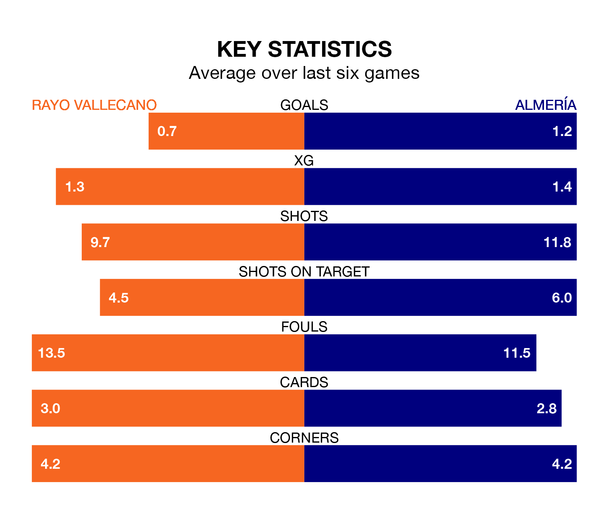

Rayo Vallecano are heavy favourites to keep all three points at home in Sunday's late kick-off against Almería.
Rayo, who sit 15th in La Liga with 33 games played, are priced at 1.5 to seal victory at Estadio de Vallecas.
Sitting five places and 20 points behind them in the table, Almería are 6.0 to win with *Betting Company*, while the draw is at 4.2.
With Stole Dimitrievski between the sticks, Rayo can rely on one of the league's safest pair of hands. He has kept 12 clean sheets in his 33 appearances this season, and only one other 'keeper – Athletic Club Bilbao's Unai Simón – has been able to prevent the opposition scoring on more occasions in La Liga.
In Almería's net, Luís Maximiano has five clean sheets in 30 games. He has conceded a goal every 52 minutes, 60% more often than the 85 minutes between goals for Dimitrievski.
In the last 10 years, Rayo and Almería have played each other on 14 occasions. Rayo won nine of them, Almería four, and they drew once.
On average, Rayo scored 1.2 goals and Almería 0.8 in those matches.
Their last meeting was on August 11, when Rayo won 2-0 away.
The hosts are in mixed form in La Liga, with two wins and two draws from their last six games.
With a win and two draws over that period, the away side's form is worse – they have taken five points from 18, compared to Rayo's eight.
With 27 goals in 33 games so far this season, Rayo are the league's joint-third-lowest scorers with 0.8 goals per game. And they are conceding at an average rate, letting in 42 goals at a rate of 1.3 per game.
Almería are also below average scorers, with 1.0 goal per game, compared to a league average of 1.3. They have conceded 2.0 goals per game.
Rayo's last match was on April 28, a 3-0 loss against Villarreal.
Almería lost 3-1 against Getafe CF last time out, on April 27, with Anthony Lozano on the scoresheet.
Updated: 12:00 (UTC), 02/05/24